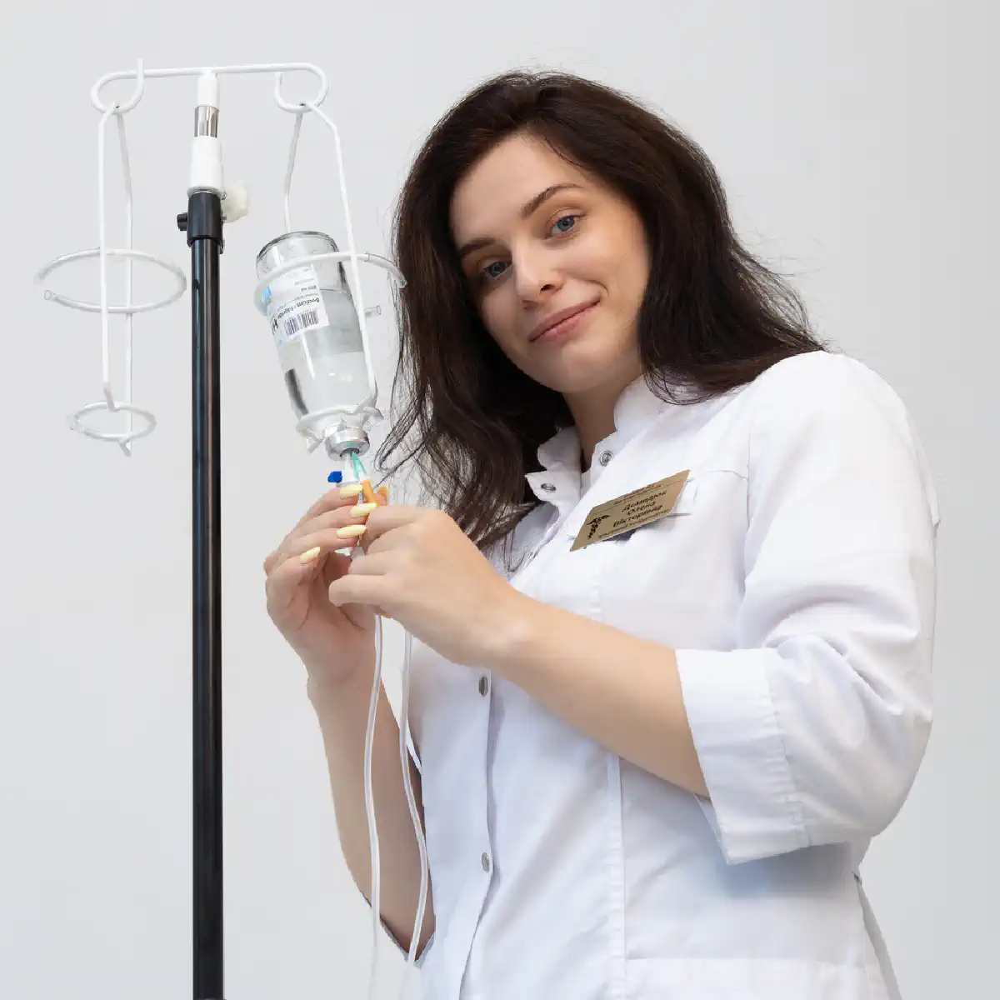

+38(068) 79 72 782
+38(068) 79 72 782Крапельниця від наркотиків Чорноморськ
Допоможемо пережити складний період


Безкоштовна консультація, працюємо цілодобово 24/7
Допоможемо пережити складний період
Крапельниця від наркотиків у Чорноморську — це сучасна медична процедура, розроблена для екстреного зняття наркотичної інтоксикації, полегшення ломки та комплексного відновлення життєво важливих функцій організму після вживання психоактивних речовин. При потраплянні наркотиків в організм токсини та продукти їх розпаду стрімко накопичуються в крові, чинячи руйнівний вплив на нервову систему, роботу головного мозку, серцево-судинну систему, печінку та нирки. Без своєчасного втручання ці процеси можуть призводити до серйозних ускладнень, зокрема тахікардії, стрибків артеріального тиску, порушень дихання, судом і психоемоційних розладів.
Окрім фізичного полегшення, процедура має значний вплив на психоемоційний стан: знижується тривожність, покращується сон, нормалізується настрій і відновлюється ясність мислення. Професійний медичний підхід дозволяє не лише купірувати гострі симптоми інтоксикації, а й створити основу для подальшої комплексної терапії наркозалежності, знижуючи ймовірність повторного вживання наркотичних речовин і забезпечуючи безпечне відновлення організму.
Крапельниця від наркотиків застосовується при гострих станах інтоксикації, вираженому абстинентному синдромі (так званій «ломці») та загальному виснаженні організму після тривалого або регулярного вживання психоактивних речовин. Ці стани супроводжуються сильною слабкістю, зневодненням, порушенням серцевого ритму, стрибками тиску, розладами сну та підвищеною тривожністю. Основна мета процедури — забезпечити комплексну детоксикацію організму, м’яко вивести токсини та продукти розпаду наркотичних речовин із крові, відновити водно-електролітний баланс і нормалізувати роботу життєво важливих органів.
Крапельниця дозволяє значно знизити вираженість больового синдрому, полегшити психоемоційні розлади, зменшити тремор, панічні стани та вегетативні порушення, які супроводжують ломку. Лікування проводиться виключно індивідуально, з урахуванням типу наркотичної речовини, тривалості та частоти її вживання, стану серцево-судинної системи, печінки, нирок та інших органів. Такий підхід забезпечує безпечне й контрольоване відновлення організму, запобігає розвитку серйозних ускладнень і створює основу для подальшої комплексної терапії наркозалежності.
Наркотичне отруєння може проявлятися по-різному, залежно від типу вжитої речовини, дозування, тривалості прийому та індивідуальних особливостей організму. Симптоми інтоксикації можуть розвиватися швидко й прогресувати, чинячи серйозний вплив на роботу життєво важливих систем: серцево-судинної, дихальної, нервової та травної. Найбільш часті прояви наркотичного отруєння включають:
При появі будь-якого з перелічених симптомів вкрай важливо терміново викликати нарколога або екстрену медичну допомогу. Самолікування в таких випадках надзвичайно небезпечне — лише професійна крапельниця та комплексна медична підтримка здатні безпечно зняти інтоксикацію, відновити роботу органів і систем, знизити больовий синдром і тривожність, а також запобігти критичним ускладненням, включно з летальним наслідком.
Ломка — це вкрай тяжкий стан, який виникає при різкому припиненні вживання наркотичних речовин після тривалого або регулярного прийому. Вона супроводжується комплексом фізичних і психоемоційних порушень, які можуть становити серйозну загрозу для життя пацієнта. Найбільш небезпечною є ломка при вживанні опіоїдів, стимуляторів, синтетичних наркотиків і комбінованих речовин, оскільки такі препарати викликають сильну залежність і виражені реакції організму на різке припинення їх прийому.
Основні ризики при ломці пов’язані зі зневодненням, порушенням роботи серця та судинної системи, стрибками артеріального тиску, судомами, порушеннями дихання та гострими психічними розладами, включно з панічними атаками, агресією, дезорієнтацією та депресією. Без медичного втручання ці стани можуть швидко прогресувати, призводячи до критичних ускладнень, а в окремих випадках — до летального наслідку.
Медична крапельниця при ломці є одним із найефективніших і найбезпечніших способів полегшити стан пацієнта. Вона забезпечує надходження детоксикаційних розчинів, вітамінів, електролітів і седативних засобів безпосередньо в кровотік, що дозволяє стабілізувати роботу серця, печінки, нирок і нервової системи, зменшити біль і тривожність, відновити водно-електролітний баланс і нормалізувати психоемоційний стан.
Професійний контроль лікаря-нарколога гарантує, що процедура проводиться з урахуванням індивідуальних особливостей організму пацієнта, типу та тривалості вживання наркотика, супутніх захворювань і тяжкості абстинентного синдрому. Це мінімізує ризики ускладнень, забезпечує безпечне полегшення симптомів і створює основу для подальшої комплексної терапії наркозалежності. Своєчасне звернення по медичну допомогу при ломці — це не лише спосіб полегшити страждання, а й реальна можливість зберегти життя, здоров’я та функціональність організму, запобігши критичним станам і повторному загостренню залежності.
Крапельниця від наркотиків необхідна в тих випадках, коли організм пацієнта перебуває під серйозним токсичним навантаженням і самостійно не здатний впоратися з наслідками вживання психоактивних речовин. Медична інфузійна терапія забезпечує швидке й безпечне полегшення стану, запобігає ускладненням і створює основу для подальшого відновлення. Показання до застосування крапельниці включають:
Чим раніше надається професійна допомога нарколога та проводиться крапельниця, тим вища ефективність лікування, швидше відновлюються життєво важливі функції організму та мінімізується ризик ускладнень. Медичний контроль дозволяє безпечно полегшити стан пацієнта, стабілізувати роботу внутрішніх органів і підготувати його до подальшого лікування залежності.
Інфузійна терапія сьогодні вважається одним із найефективніших, надійних і безпечних методів зняття ломки при наркотичній залежності. Вона дозволяє доставити необхідні препарати безпосередньо в кровотік, що забезпечує миттєвий вплив на організм і дає змогу швидко зменшити фізичні та психоемоційні симптоми абстинентного синдрому. Крапельниця допомагає знизити інтенсивність больового синдрому, нормалізувати роботу серцево-судинної системи, стабілізувати тиск і серцевий ритм, відновити водно-електролітний баланс, а також полегшити тривожність, дратівливість та інші прояви психоемоційного напруження.
На відміну від самолікування, використання «народних методів» або прийому препаратів без медичного контролю, інфузійна терапія проводиться суворо під наглядом досвідченого нарколога, який враховує всі індивідуальні особливості пацієнта: вік, супутні захворювання, тривалість і тип уживаної речовини, тяжкість інтоксикації. Такий підхід дозволяє мінімізувати ризики ускладнень, включно з судомами, різкими перепадами тиску, аритміями та психологічними кризами.
Крім того, крапельниця забезпечує не лише полегшення гострих симптомів, а й створює умови для поступового відновлення організму, підтримуючи роботу печінки, нирок і нервової системи. Цей метод вважається оптимальним першим етапом комплексної терапії наркоманії, оскільки дозволяє стабілізувати стан пацієнта та підготувати його до подальшого лікування залежності й реабілітації.
Ефективність процедури значною мірою залежить від своєчасності звернення: чим раніше проведена крапельниця, тим швидше відновлюється нормальне функціонування організму, знижується ризик ускладнень і підвищується ймовірність успішного виходу з абстинентного синдрому без серйозних наслідків для здоров’я.
Склад крапельниці від наркотиків підбирається індивідуально для кожного пацієнта й залежить від типу вживаної речовини, тривалості інтоксикації, стану організму, віку, ваги та наявності супутніх захворювань. Такий персоналізований підхід дозволяє максимально безпечно полегшити гострі симптоми ломки, прискорити детоксикацію організму, відновити життєво важливі функції внутрішніх органів і знизити ризик серйозних ускладнень, включно зі зневодненням, серцево-судинними порушеннями, судомами та психоемоційними кризами. Використання крапельниці при ломці забезпечує комплексний вплив на організм, дозволяючи не лише полегшити фізичні прояви абстиненції, а й стабілізувати психоемоційний стан пацієнта, знизити тривогу, панічні атаки та дратівливість, покращити сон і загальне самопочуття. Зазвичай крапельниця включає такі компоненти:
Такий комплексний склад крапельниці забезпечує всебічне відновлення організму: м’яко й безпечно знімає ломку, стабілізує роботу внутрішніх органів, покращує психоемоційний стан, відновлює сили та життєвий тонус. Медичний контроль на всіх етапах процедури дозволяє коригувати лікування залежно від реакції організму, забезпечуючи високу ефективність і мінімальний ризик ускладнень. Регулярне застосування крапельниці в межах комплексного лікування залежності є першим і вкрай важливим етапом, який готує пацієнта до подальшої реабілітації, психотерапії та соціальної адаптації, створюючи міцну основу для довготривалої відмови від наркотичних речовин і відновлення якості життя.
Вартість крапельниці від наркотиків у Чорноморську починається від 2499 грн.
Зняття ломки при наркотичній залежності — це комплексний процес, який потребує професійного підходу та постійного медичного контролю. Він включає не лише проведення крапельниці для швидкої детоксикації організму, а й комплексну медикаментозну підтримку, спрямовану на зниження больового синдрому, стабілізацію роботи серця, печінки та нервової системи. Медикаментозна підтримка може включати препарати для нормалізації тиску, корекції серцевого ритму, седативні та протитривожні засоби, гепатопротектори, вітаміни й мінерали, що відновлюють дефіцит життєво важливих речовин. Такий підхід допомагає безпечно зменшити фізичні прояви ломки — біль, тремор, прискорене серцебиття, нудоту та блювання. Спостереження лікаря на всіх етапах процедури відіграє ключову роль: спеціаліст оцінює динаміку стану пацієнта, своєчасно коригує склад крапельниці та дозування препаратів, стежить за стабільністю життєвих показників і запобігає розвитку ускладнень, таких як судоми, аритмії, гіпертонічні кризи або психоемоційні кризи.
Не менш важливою частиною лікування є корекція сну та психоемоційного стану. Ломка супроводжується безсонням, підвищеною тривожністю, дратівливістю та панічними атаками, що посилює фізичний дискомфорт і ускладнює відновлення організму. За допомогою седативних препаратів, м’яких анксіолітиків і психологічної підтримки вдається нормалізувати сон, знизити тривогу та стрес, відновити психоемоційний баланс і підготувати пацієнта до подальшої реабілітації.
У низці випадків застосовується комбінований підхід, що поєднує крапельниці, медикаментозну підтримку, психотерапевтичні методи, фізіотерапію та корекцію режиму дня. Такий комплекс дозволяє не лише максимально полегшити симптоми ломки, а й запобігти розвитку ускладнень, знизити ризик рецидиву та прискорити відновлення життєвих сил пацієнта. Таким чином, зняття ломки — це багатоступенева й ретельно контрольована процедура, спрямована на м’яке, безпечне та ефективне відновлення організму, стабілізацію психоемоційного стану та підготовку до подальшої терапії залежності.
Крапельниця від опіоїдів — це спеціалізована медична процедура, призначена для безпечного зняття ломки та полегшення симптомів інтоксикації після вживання опіоїдних препаратів. Ломка при опіоїдах супроводжується вираженим болем у м’язах і суглобах, сильною тривожністю, панічними атаками, прискореним серцебиттям, стрибками тиску та порушеннями дихання. Самостійні спроби впоратися з цим станом надзвичайно небезпечні й можуть призвести до серйозних ускладнень, включно зі зневодненням, серцево-судинними кризами, судомами та втратою свідомості.
Інфузійна терапія при опіоїдній ломці дозволяє доставити необхідні препарати безпосередньо в кровотік, забезпечуючи швидкий ефект. Склад крапельниці підбирається індивідуально й може включати детоксикаційні розчини, електроліти для відновлення водно-сольового балансу, вітаміни групи B і вітамін C для підтримки нервової системи, седативні та протитривожні засоби для нормалізації психоемоційного стану, а також препарати для стабілізації серцевого ритму та артеріального тиску. Крапельниця від опіоїдів є першим і вкрай важливим етапом комплексного лікування залежності. Вона не лише полегшує гострі прояви ломки, а й готує організм до подальшої реабілітації та терапії, створюючи основу для безпечного й стійкого відновлення здоров’я.
При інтоксикації ЛСД крапельниця є важливою медичною процедурою, спрямованою на м’яке й безпечне відновлення організму після впливу психоделічної речовини. ЛСД чинить сильний вплив на центральну нервову систему, викликаючи психоемоційне збудження, тривожність, панічні атаки, дезорієнтацію та порушення сну. Ці прояви можуть супроводжуватися тахікардією, підвищенням артеріального тиску, головним болем, нудотою та загальною слабкістю.
Інфузійна терапія при інтоксикації ЛСД дозволяє доставити необхідні розчини й препарати безпосередньо в кровотік, що забезпечує швидкий і контрольований ефект. Склад крапельниці підбирається індивідуально та включає детоксикаційні розчини для прискореного виведення продуктів розпаду речовини, електроліти для відновлення втрати рідини й солей, вітаміни групи B і вітамін C для підтримки роботи нервової системи, а також седативні та протитривожні препарати для нормалізації психоемоційного стану та полегшення симптомів тривоги й паніки. Завдяки комплексному й індивідуальному підходу крапельниця при інтоксикації ЛСД не лише зменшує неприємні симптоми, а й створює безпечні умови для поступового відновлення організму, запобігає повторним кризам і готує пацієнта до подальшої реабілітації та психотерапевтичної підтримки.
Синтетичні «солі» (похідні амфетаміну та стимуляторів) викликають вкрай тяжку інтоксикацію, чинячи сильний вплив на центральну нервову систему, серцево-судинну систему та метаболізм організму. Після вживання спостерігаються виражене збудження, тривожність, панічні стани, безсоння, тахікардія, стрибки тиску, порушення координації та дезорієнтація. У низці випадків можливі судоми, перегрів організму та серйозне навантаження на печінку й нирки.
Крапельниця від солей застосовується як один із найефективніших і найбезпечніших методів зняття гострої інтоксикації. Вона дозволяє швидко доставити в кров необхідні розчини та препарати, що сприяє детоксикації організму, виведенню токсинів і відновленню водно-електролітного балансу. До складу крапельниці можуть входити детоксикаційні розчини, електроліти, вітаміни групи B і вітамін C, седативні та протитривожні засоби, а також препарати для підтримки серцево-судинної системи. Таким чином, інфузійна терапія при інтоксикації синтетичними солями забезпечує комплексне відновлення організму, дозволяє безпечно зняти гостру інтоксикацію, стабілізувати фізичний і психоемоційний стан пацієнта та підготувати його до подальшої реабілітації й лікування залежності.
Крапельниця від Лірики (прегабаліну) застосовується при передозуванні або при розвитку залежності, що супроводжується вираженою тривожністю, безсонням, панічними станами, тремором та іншими вегетативними порушеннями. Прегабалін впливає на центральну нервову систему, і при різкій відміні або зловживанні може викликати виражений абстинентний синдром, який супроводжується емоційною нестабільністю, слабкістю, тахікардією, стрибками тиску та порушеннями сну.
Інфузійна терапія під контролем лікаря-нарколога дозволяє максимально безпечно стабілізувати стан пацієнта. До складу крапельниці можуть входити детоксикаційні розчини для виведення токсинів, електроліти для відновлення водно-сольового балансу, вітаміни групи B і вітамін C для підтримки нервової системи, седативні та анксіолітичні препарати для зниження тривоги, а також гепатопротектори для захисту печінки. Крапельниця від Лірики забезпечує комплексне відновлення організму після передозування або ломки, м’яко знімає симптоми абстинентного синдрому та створює безпечну основу для подальшого лікування залежності, включно з психотерапевтичною підтримкою та реабілітацією.
Крапельниця від амфетаміну застосовується при інтоксикації після вживання стимуляторів, таких як амфетамін, метамфетамін та їх аналоги. Ці речовини викликають сильне збудження центральної нервової системи, виснажують організм, перевантажують серце та судинну систему, порушують роботу нирок і печінки, а також можуть провокувати виражені психоемоційні розлади — тривожність, дратівливість, панічні стани та безсоння.
Інфузійна терапія дозволяє м’яко й безпечно відновити водно-електролітний баланс, усунути зневоднення, нормалізувати тиск і частоту серцевих скорочень, знизити прояви тахікардії та аритмій. До складу крапельниці можуть входити детоксикаційні розчини для прискореного виведення токсинів, електроліти, вітаміни групи B і вітамін C для підтримки нервової системи, седативні та протитривожні препарати для стабілізації психоемоційного стану, а також гепатопротектори для захисту печінки. Крапельниця від амфетаміну забезпечує комплексне відновлення організму, знижує ризик ускладнень, прискорює реабілітацію та створює безпечну основу для подальшого лікування залежності, включно з психологічною підтримкою та відновленням нормального способу життя.
Крапельниця від марихуани застосовується при регулярному або надмірному вживанні канабісу, коли можуть проявлятися ознаки інтоксикації, тривожні стани, панічні атаки, дратівливість, безсоння та загальна слабкість організму. Хоча марихуана вважається менш токсичною порівняно з іншими наркотиками, тривале вживання може призводити до накопичення психоактивних речовин в організмі, перевантаження печінки, порушення роботи нервової системи та зниження когнітивних функцій.
Інфузійна терапія дозволяє м’яко й безпечно стабілізувати психоемоційний стан, відновити водно-електролітний баланс, знизити тривожність і покращити сон. До складу крапельниці входять детоксикаційні розчини для виведення продуктів розпаду канабіноїдів, електроліти для відновлення рідини й солей, вітаміни групи B і вітамін C для підтримки нервової системи, а також седативні препарати для нормалізації психоемоційного стану. Під медичним контролем лікар спостерігає за показниками тиску, пульсу та загальним самопочуттям пацієнта, що забезпечує безпеку процедури й запобігає можливим ускладненням. Крапельниця від марихуани допомагає пацієнту відновити фізичну та психічну рівновагу, знизити прояви тривожності, покращити якість сну й прискорити повернення організму до нормального стану, створюючи міцну основу для подальшої профілактики зловживання речовиною та нормалізації повсякденного життя.
Крапельниця від екстазі (МДМА) застосовується при інтоксикації, спричиненій вживанням екстазі, який часто призводить до вираженого зневоднення організму, перегріву, тахікардії, стрибків артеріального тиску та перевантаження серцево-судинної системи. Крім того, МДМА чинить сильний вплив на нервову систему, викликаючи тривожність, панічні стани, безсоння та психоемоційне виснаження.
Інфузійна терапія під медичним контролем дозволяє швидко відновити водно-електролітний баланс, заповнити дефіцит вітамінів і мінералів, стабілізувати тиск і серцевий ритм, зняти симптоми перевантаження нервової системи. До складу крапельниці можуть входити детоксикаційні розчини для прискореного виведення токсинів, електроліти для відновлення балансу рідини, вітаміни групи B і вітамін C для підтримки нервової системи, а також седативні препарати для зменшення тривожності та нормалізації сну.
Під наглядом лікаря-нарколога пацієнт отримує безпечне й контрольоване відновлення організму, запобігання перевантаженню серця та нирок, покращення загального самопочуття й психоемоційного стану. Крапельниця від екстазі дозволяє м’яко й ефективно вивести токсини, знизити ризик ускладнень, прискорити відновлення та створити умови для подальшої стабілізації здоров’я після вживання психоактивної речовини.
Крапельниця від кокаїну застосовується при гострій інтоксикації або наслідках зловживання кокаїном, який чинить сильний збуджувальний вплив на нервову систему, підвищує частоту серцевих скорочень, викликає стрибки артеріального тиску та збільшує навантаження на серце й судини. Вживання кокаїну також може супроводжуватися тривожністю, панікою, безсонням, підвищеною дратівливістю та загальною слабкістю організму.
Інфузійна терапія під контролем лікаря-нарколога дозволяє м’яко й безпечно стабілізувати стан пацієнта, знизити ризик аритмій, нормалізувати тиск, відновити водно-електролітний баланс і підтримати роботу серця та судин. Крапельниця може включати детоксикаційні розчини для прискореного виведення токсинів, електроліти для заповнення дефіциту рідини та мінералів, вітаміни групи B і вітамін C для підтримки нервової системи, а також седативні та протитривожні препарати для нормалізації психоемоційного стану та покращення сну.
Процедура забезпечує комплексне відновлення організму після інтоксикації кокаїном, знижує фізичне й психічне навантаження, запобігає ускладненням, прискорює відновлення сил і повертає пацієнту ясність мислення, спокій і стійкість нервової системи. Під наглядом лікаря-нарколога лікування проходить безпечно й ефективно, створюючи основу для подальшої стабілізації здоров’я та профілактики повторного вживання наркотиків.
Ефективність крапельниці від наркотиків безпосередньо залежить від кількох ключових факторів. По-перше, це своєчасність звернення по медичну допомогу — чим раніше пацієнт отримує професійну підтримку, тим менший ризик ускладнень і тяжких наслідків інтоксикації або ломки. По-друге, важливий правильний підбір препаратів, який визначається індивідуально лікарем-наркологом з урахуванням типу наркотичної речовини, тривалості вживання, супутніх захворювань, віку та загального стану організму.
Не менш значущим фактором є постійний медичний контроль під час процедури, який дозволяє спостерігати за показниками тиску, пульсу, серцевого ритму та психоемоційного стану пацієнта, вчасно коригувати склад інфузії та дозування препаратів. Такий підхід виключає ризики передозування, різких перепадів тиску, аритмій, зневоднення та інших небезпечних станів.
Крім того, індивідуальний підхід підвищує результативність терапії: крапельниця не лише полегшує симптоми ломки та інтоксикації, а й запускає відновлювальні процеси в організмі, покращує роботу нервової системи, серця, печінки та нирок, знижує тривожність, дратівливість і сприяє нормалізації сну. У результаті комплексної інфузійної терапії пацієнт отримує безпечне, контрольоване й максимально ефективне відновлення організму, що є першим і вкрай важливим кроком на шляху до одужання та подальшої реабілітації від наркотичної залежності.
Детоксикація від наркотиків — це складний і індивідуалізований процес, який завжди підбирається з урахуванням конкретного виду речовини, її фармакологічного впливу на організм і тривалості вживання. Різні групи психоактивних речовин по-різному впливають на центральну нервову систему, серцево-судинну систему, печінку, нирки та метаболічні процеси. Наприклад, опіоїди викликають виражену фізичну залежність, больовий синдром і депресивні стани, стимулятори посилюють навантаження на серце й мозок, провокують тахікардію, панічні атаки та виснаження нервової системи, а синтетичні наркотики, такі як «солі» або ЛСД, можуть спричиняти гострі психози, агресію та виражені когнітивні порушення.
Саме тому підбір схеми детоксикації має здійснюватися виключно професіоналом — лікарем-наркологом, який враховує індивідуальні особливості пацієнта: вік, вагу, наявність хронічних захворювань, стан печінки й нирок, вираженість інтоксикації, тривалість вживання речовини та супутні психоемоційні порушення. Помилки при самостійній детоксикації або використанні «народних методів» можуть призвести до небезпечних для життя ускладнень — судом, різких стрибків тиску, серцево-судинних кризів, психічних розладів і навіть летального наслідку. Професійна детоксикація дозволяє не лише безпечно вивести токсини та продукти розпаду наркотиків з організму, а й знизити больовий синдром, тривогу, панічні стани, відновити водно-електролітний баланс і психоемоційну рівновагу. Такий підхід забезпечує максимальну ефективність лікування й мінімальний ризик ускладнень, створюючи основу для подальшої реабілітації та повного відновлення здоров’я пацієнта.
Крапельниця від наркотиків — перший крок до одужання та контролю над залежністю. Ця медична процедура є базовим і вкрай важливим етапом на шляху до лікування наркоманії, оскільки дозволяє швидко стабілізувати стан пацієнта, полегшити гострі прояви інтоксикації та знизити вираженість ломки. Під впливом психоактивних речовин організм зазнає серйозного порушення роботи всіх життєво важливих систем: серця, судин, печінки, нирок і нервової системи, а психоемоційний стан стає вкрай нестабільним. Крапельниця забезпечує безпечне введення необхідних розчинів і медикаментів, відновлює водно-електролітний баланс, підтримує роботу серця й печінки, а також допомагає нормалізувати сон і знизити тривожність.
Звернувшись до наркологів UmbrellaPlus у Чорноморську, пацієнти отримують професійний медичний контроль, індивідуальний підбір складу крапельниці та анонімне проведення процедури вдома, що особливо важливо для збереження особистого простору й емоційного комфорту. Крапельниця від наркотиків — це перший, але вкрай важливий крок до повного відновлення здоров’я, емоційної рівноваги та повернення до нормального життя.
Для консультації та виклику нарколога додому в Чорноморську телефонуйте: +38(050-021-69-57)
Анонимно

Ну в хлопців просто золоті руки й світла голова, мене капали Олексій та Владислав, буквально за декілька сеансів я наче заново народився, до цього пив більше 3х тижнів, не міг зупинитись, дуже радий що знайшов саме цих спеціалістів, всім рекомендую
Анонимно
В течение нескольких лет я злоупотреблял алкоголь, что привело к увольнению с работы и вызвало у меня мысли о суициде. Понимая, что такой образ жизни неприемлем, я обратился за помощью в клинику “Амбрела”. Здесь я смог преодолеть свою зависимость от спиртного благодаря заботливым и опытным врачам, а также эффективной системе лечения. Спустя более года я полностью избавился от желания употреблять алкоголь, и теперь моя жизнь вернулась в норму. Я даже не приближаюсь к спиртному! Благодарю врачей клиники “Амбрела” за их помощь и заботу.
Анонимно
Я обращался за помощью в различные клиники, пытаясь избавиться от своей зависимости от алкоголя, но без особых успехов. Никак не мог справиться с желанием прибегнуть к бутылке, пока друг не посоветовал мне обратиться в центр “Амбрелла”. Я записался на прием и был поражен заботливым отношением к пациентам. Уже прошло два года, и теперь я смотрю на алкоголь с абсолютной равнодушием, активно занимаюсь спортом и улучшил отношения в семье. Благодаря центру “Амбрелла” моя жизнь была спасена от алкогольной зависимости!
Анонимно
Хочу выразить свою благодарность врачам из центра алкоголизма “Амбрела” за то, что они буквально спасли мою жизнь. В течение последнего года я сильно увлекался питьем, и все это привело к катастрофическим последствиям. Хотя я ходил на терапевтические сеансы, но безрезультатно. Тогда я нашел адрес клиники “Амбрела” в интернете, изучил отзывы и информацию о центре, и записался на прием. Там мне сразу предложили методику лечения, которая помогла не только справиться с физической ломкой, но и психической зависимостью от алкоголя. Не буду распространяться, скажу только одно - после пребывания в этой клинике я стал другим человеком, и навсегда забыл, что такое привкус алкоголя. Больше меня не тянет на это! Я искренне верю, что в центре “Амбрела” трудятся настоящие целители душ!
Анонимно
После сложного развода мой сын начал подавлять свою обиду и горе употреблением алкоголя. Он старался скрывать это от меня, но я, как мать, почувствовала, что что-то не так. В конечном итоге, ситуация стала критической. Моя знакомая посоветовала мне обратиться в клинику “Амбрела”. Я была приятно удивлена их работой! Они помогли сыну преодолеть очередной период злоупотребления алкоголем, и с тех пор прошел уже более года, и он совсем не пьет.
Анонимно
Благодаря вашей помощи, моя семья была спасена. Я с трудом уговорила мужа начать лечение, и последний каплей был пьяное ДТП. К счастью, в аварии никто не пострадал, но это был для него сигнал к действию. Он наконец согласился пройти курс лечения на дому, в стационар не хотел ложиться. Лечение было трудным, и были моменты, когда срыв был настолько близок, но благодаря вашему центру Амбрелла мы справились с этим.
Анонимно
Для меня эта клиника стала настоящим спасением! Долгое время я упорно отказывался от лечения, уверен был, что со мной все в порядке. Но к счастью, семья уговорила меня попробовать. И сегодня я чувствую себя невероятно счастливым, осознавая, что мне абсолютно не нужен алкоголь. Огромное спасибо за помощь и поддержку, которые я получил здесь! Я благодарен вам за новую возможность жить полноценной и счастливой жизнью!
Анонимно
Выражаю благодарность ребятам, которые оказали мне помощь и не отвернулись. Уже 10 месяцев я остаюсь чистой. Благодарю за то, что помогли найти новый путь в моей жизни.
Номер телефону:
+380 (68) 797 27 82
+380 (50) 021 69 57
Адресу наркологічного центра вашого міста уточнюйте за
телефоном
Працюємо: Київ, Одеса, Львів, Харків, Дніпро, Запоріжжя,
Черкасах, Чугуєві, Чорноморську, Кам'янському
Telegram: t.me/umbrellaplus
Графік работы: Цілодобово